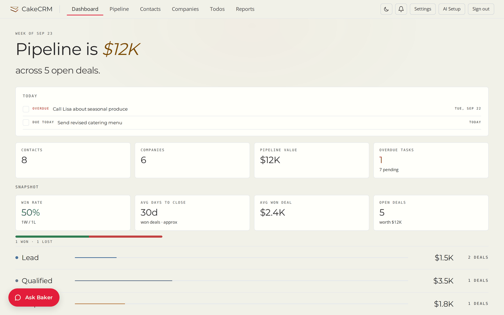
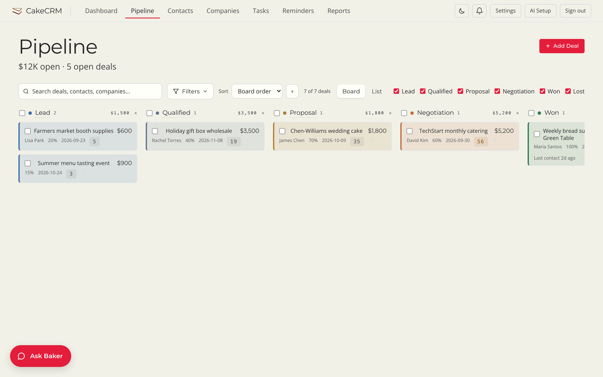
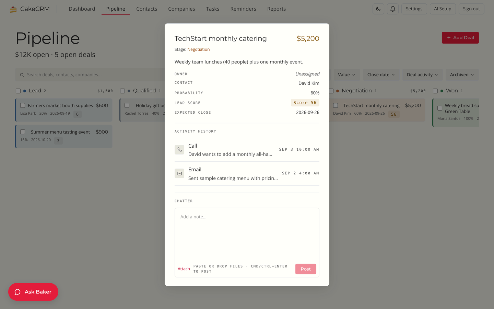
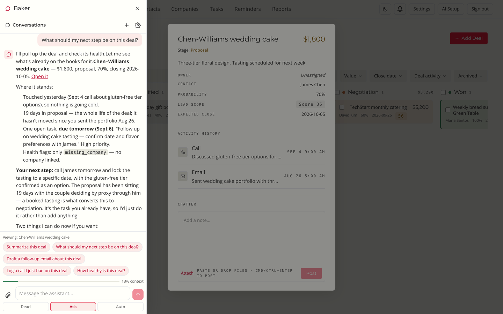

Free · Open source · Self-hosted
The simple CRM.
A CRM so simple you can coach your team instead of just paying them more commission.
Three screens your people will actually use — contacts, a pipeline, today's todos — and an assistant that handles the busywork. Nothing to configure, nothing to fight.
One click in the cloud, or on your own hardware. Works with no AI key at all.
The tour
This is the whole thing.
No modules to buy, no admin console to learn. Four screenshots cover it.
01
Start with what needs you today.
The dashboard opens on a short Today list: the overdue call, the menu that goes out this afternoon. Under it, one pipeline number and the handful of stats that matter.

02
Your pipeline is a board. Drag the card.
Every open deal on one screen, in the stage it is in, with the value and the next date on the card. Moving a deal is a drag. That is the entire workflow.

03
Open a deal. Everything is on one card.
Who, how much, how likely, when. The calls and emails so far, and a box to add a note. No tabs, no sub-pages, nothing hidden behind a settings gear.

04
Ask Baker. Optional.
Add any AI provider key and Baker reads the deal you have open, checks its health, and tells you the next step in plain words. It can log the call, put a follow-up draft in your Gmail Drafts, and nudge you when a deal goes quiet. In Ask mode, which is how Baker starts, every write waits for your approval — there is an Auto mode that runs them without asking, and switching it on is your call. Skip the key and the CRM is still the whole CRM.

What it is
Simple on purpose.
Built for small teams. Tested by bigger ones. It stays small because everything it leaves out is a thing your team never has to learn.
-
No per-seat fees
AGPL-3.0, free forever. Add your whole team with admin and member roles and pay nothing for the tenth seat.
-
Your data stays yours
One PostgreSQL database on a server you control. Back it up with
pg_dump. Leave whenever you like and take everything with you. -
Works with zero AI keys
Contacts, companies, pipeline, todos and CSV import all run with no AI configured. The assistant is a feature you switch on, not a gate.
-
Bring any model
Anthropic, OpenAI, Google Gemini, Together AI, or a local model through Ollama. Keys are entered in the app and encrypted at rest.
-
Reads email, never sends it
Baker can search your Gmail and put a draft in your Drafts folder for you to send. There is no send capability anywhere in the code, by design.
-
Talk to it from your phone
Link a Telegram bot and ask about a deal, log a call or capture a todo from wherever you are. Confirmations arrive as Approve / Deny buttons.
Get it
Running in five minutes.
Three steps. The third one is optional.
- Deploy. Click the Railway button and set a password. Railway provisions PostgreSQL and starts CakeCRM. Prefer your own hardware?
python run.pystarts everything locally with Postgres in Docker. - Sign in. Load the sample data to look around, or import your contacts from CSV.
- Optionally, hire Baker. Paste an AI provider key in Settings. Skip this step and the CRM is still the whole CRM.